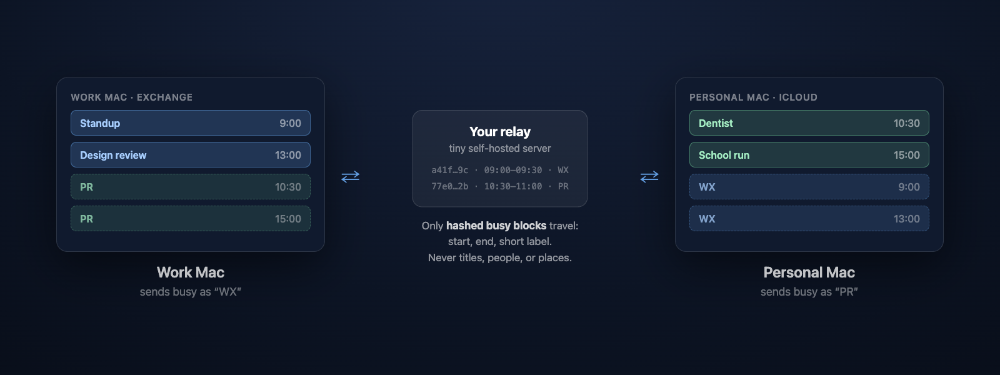

Stop your Macs from double-booking each other.
CALSync is a free, private menu bar app that syncs busy time between your own Macs — work and personal — so every calendar knows when you're actually free. No account, no Google, no third-party cloud: only anonymous hashed busy blocks ever leave your machine, synced through a tiny server you host yourself.
What leaves your Mac: hashed identifiers, start/end timestamps, and a short label you choose. What never leaves your Mac: event titles, attendees, locations, notes, calendar names. The relay can't reconstruct your schedule.

Download for macOS